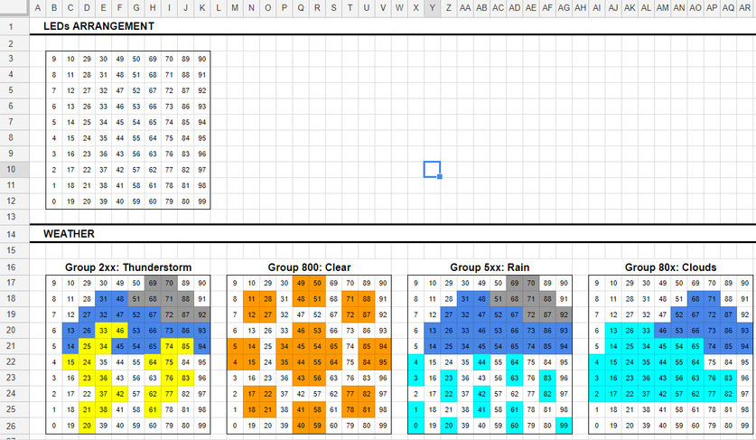
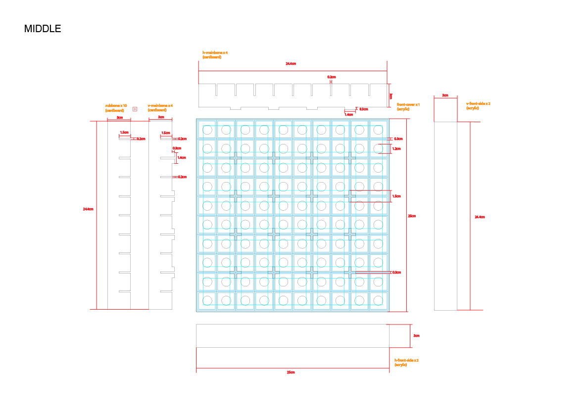
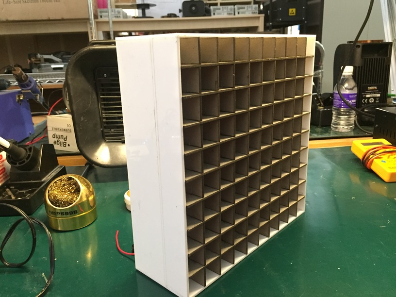
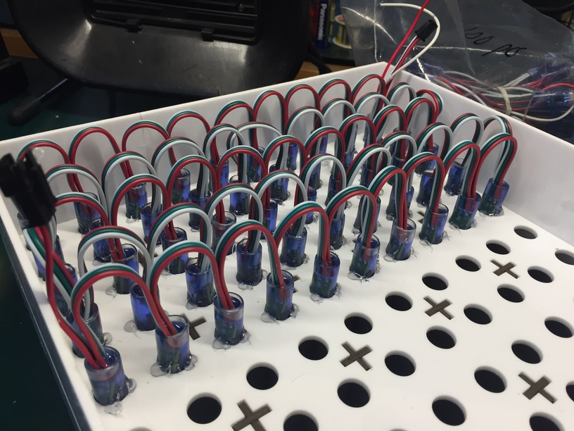
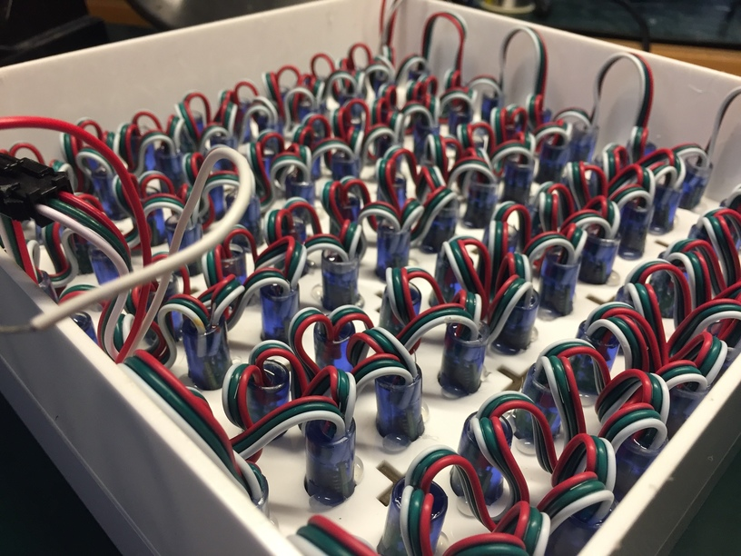
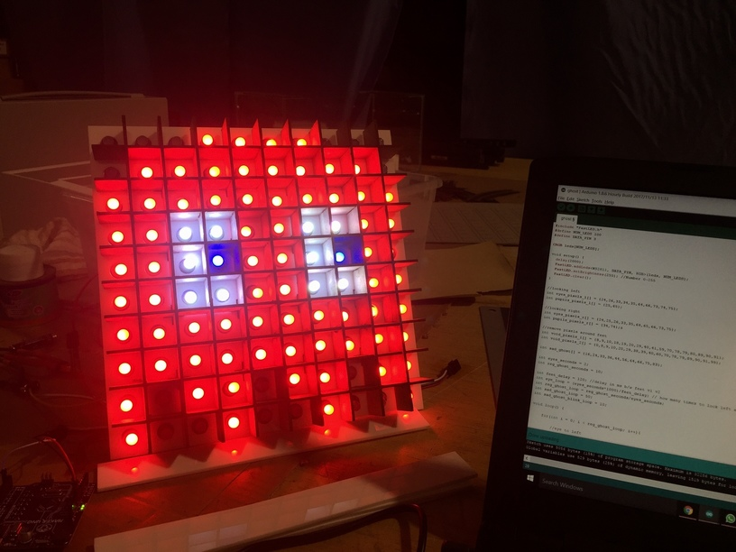

A 10x10 pixels IoT display that can be controlled through a webpage.
The time when I am thinking to try a microcontroller based project. An idea after we saw Pac-Man LED Pixel Panel Costume, it is then developed as 10x10 pixels IoT display because it will be easier for the staff to change the content of display without editing the code manually. GitHub.
This project using WS2811 LEDs string because it is individually addressable. I got it from online marketplace with lower price, one string got 50 LEDs, so I bought 2 of it.
The LEDs arrangement is designed to be vertical zig-zag in this project. Good tips from Pac-Man LED Pixel Panel Costume, plotting the pixel image in spreadsheet make your coding phases easier.
The case is designed to be 10x10 pixels. The case is divided into two parts, one part to form those pixels and the other side to hide those cables and board. The front cover made of 3mm transparent acrylic board and drafting paper, slats and divider in between made of 3mm white acrylic board, and the "bones" to form those pixels made of 3mm cardboard.
This project is done during my internship, very lucky that Penang Science Cluster has their own laser cut machine. The files for laser cutting machine designed in Adobe Illustrator.
A layman's planning file. Anyway, this is the planning of the middle part of the case. The blue lines are for calculating purpose, and the black lines are the cutting lines.
You can get the laser cut folder from here.
After the horizontal and vertical "bones" are cut and slide into each other.
After the slats, dividers and "bones" installation. Tada! The case is basically done, but we do not stick the front and back cover until we done the installation for LEDs.
The LEDs are then installed following the planned arrangement.
Used hot glue to stick those LEDs to prevent them from falling and caused flickering.
Connect both of the strings together. Place the wires neatly so that it looks clean and you will save some spaces.
Run some skethes to make sure the LEDs is working well and check the structure of the pixels parts before placing the front cover.
Not manage to find an acrylic board with the perfect opacity level that I aspect for the cover, so I place a drafting paper first and an transparent acrylic board is then sticking on top.
Programmed in C/C++ with Arduino IDE, and some HTML and CSS in between for the webpage. Sketch.
In this project, ESPresso Lite V2.0 works as the web server for the display because it has the WiFi module. It serves the website to let clients make requests and send the correct codes for display.
For the basic structure, can refer to A Beginner's Guide to the ESP8266.
When "Pacman", "Mario" or "Chessboard" is clicked, the display will display related image set.
LEDs are controlled by FastLED library for image sets. It is easy to use for beginners.
For text display, users need to insert text they want the display to display and click "Display". :P
LEDs are controlled by LEDText library in this features.
When the "Weather" button is clicked, temperature and icon for current weather will be displayed.
The data is from OpenWeatherMap through Weather API with ArduinoJson. Display includes text and weather icons sets, which uses FastLED and LEDText libraries.
After everything is done, we drilled a hole at the side to place the power jack.
The ESPresso Lite V2.0 is kinda small so it can actually be "clipped" in between LEDs.
The back cover is made to be able to open and close. Used transparent acrylic door hinge and magnetic door catch.
P.S. A demo video will be upload later.